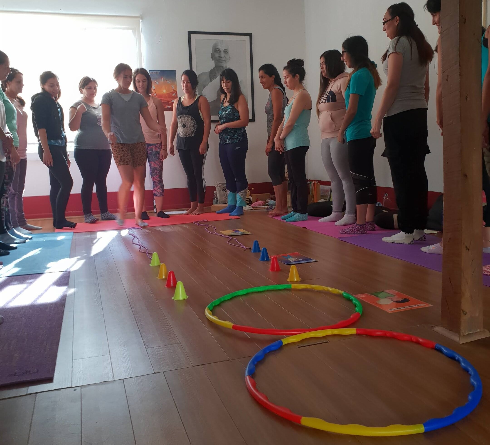

En tu clase de yoga para niños debes ir creando, creando y creando cada día ideas nuevas para encantarlos/as. Existen muchas maneras y una de ellas, puede ser la preparación de una pista de obstáculos, utilizando elementos de yoga, reciclaje, juguetes, etc.
Las pistas de obstáculos, les ofrecen desafíos y así colaboramos en el desarrollo de la tolerancia a la frustración, fomentando la seguridad, autoestima y más.
Dependiendo de la cantidad de niños y niñas, podrás crear una sola pista para que vayan pasando por turnos, crear más de una con diversas complejidades, otras por categorías y/o con las características que se te ocurran.
Debes crearla, teniendo en cuenta la edad de los niños/as, además de la experiencia corporal que hayas percibido en ellas/os.
También puedes crearla junto a ellos y que se convierta en un trabajo colaborativo y que este accionar sea parte de la clase. Aprovecha esta instancia, para educar en la importancia del trabajo en equipo, el respeto de turnos, la paciencia, etc.
¿Qué puedes utilizar? Aquí algunas ideas:
- Ladrillos y Cintos de yoga: Para situarlos de ciertas manera que puedan ser recorridos.
- Cuerdas: Para crear formas y entregar consignas a realizar en ellas.
- Aros: Para saltar y/o girar.
- Conos: Para hacer diversas caminatas.
- Tarjetas de yoga: Para detenerse y hacer determinadas posturas.
- Mats, alfombras: Para rodar sobre ellos.
- Telas: Para pasarlas sobre el cuerpo en un momento de pausa.
- Cajas: Saltar sobre ellas.
- Instrumentos musicales: Descubrir sus sonidos y bailar.
- Plumas: Para hacerlas volar.
- Pelotas de ping-pong: Para soplarlas hasta un cierto lugar.
- Máscaras de animales: Para convertirse en ellos e imitar su sonido.
Y mucho más!!!!